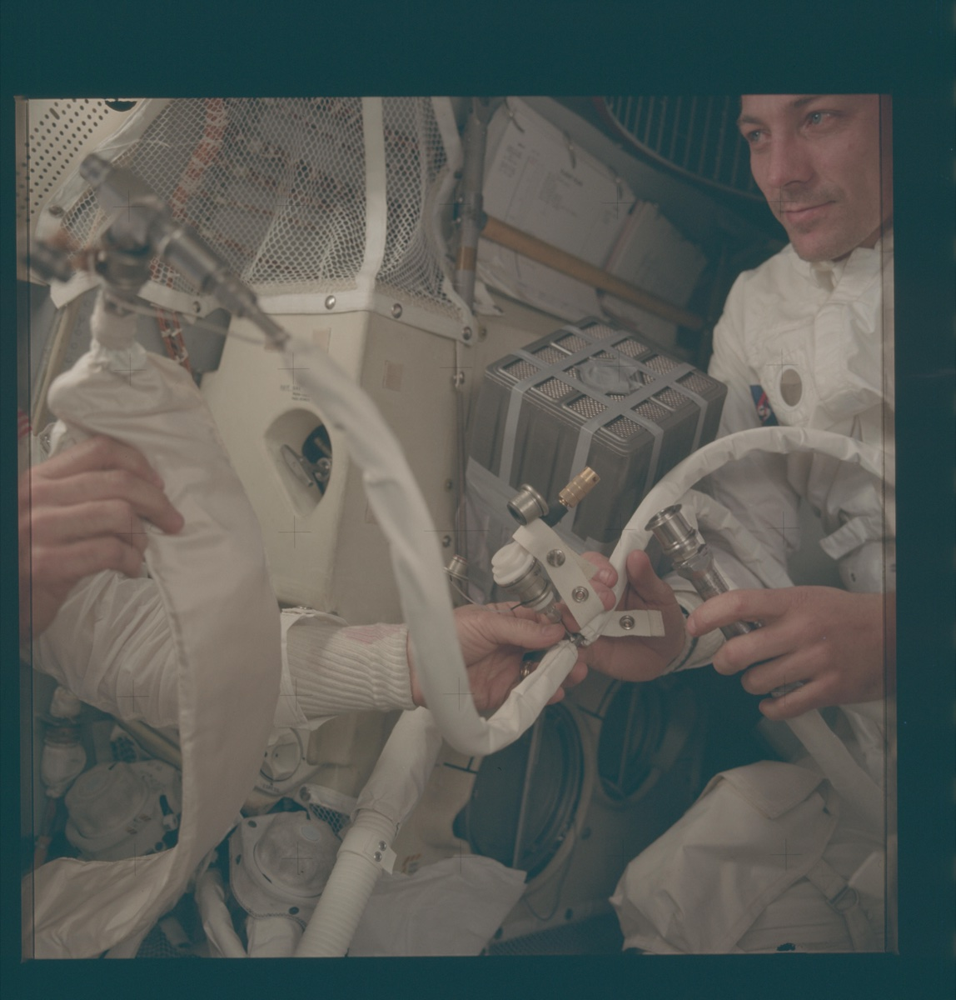
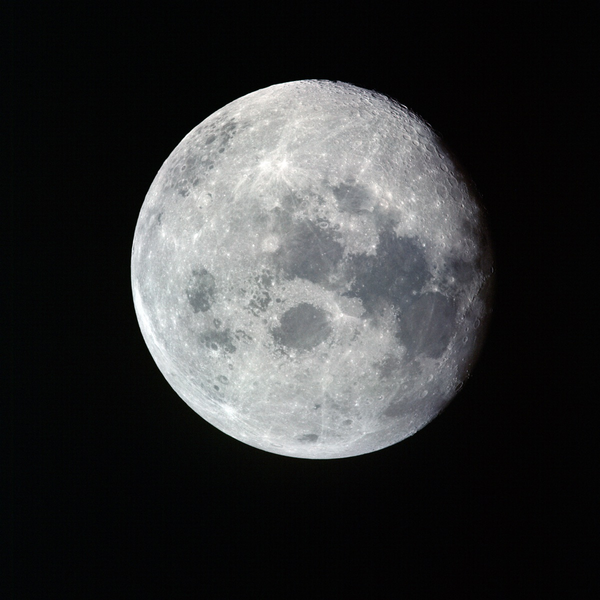

Lifeboat & Moon Flyby

Moving to the LM
With the Command Module dying, the crew made the critical move to the Lunar Module "Aquarius." Lovell and Haise began powering it up around GET 57:40, racing the Command Module's last minutes of battery power. By about GET 58:40 — nearly three hours after the explosion — Odyssey was shut down and the lifeboat was alive.
The Squeeze
- Cramped: ~160 cubic feet (like a walk-in closet)
- Designed for standing room, not living quarters
- Three grown men in thin flight coveralls — they never even put on their bulky space suits
- Moving one arm disturbs the other two
- No privacy, no comfort, no sleep possible
What the Lifeboat Provides
What It Doesn't Provide
Swinging Around the Moon
Day 4 - April 14, 1970
Apollo 13 reached its closest approach to the Moon: ~158 miles above the surface. Through the LM window, the crew watched the lunar surface rush below.
- Pericynthion (pair-ih-SIN-thee-un): The official name for the closest point to the Moon — reached at about GET 77:08. Remember that word; the next decision hangs on it. They should have been landing at Fra Mauro right now. Instead, just passing by for survival.
- Communication Blackout: Spacecraft passes behind the Moon. No radio contact with Earth for about 25 minutes. Families hold their breath.
- Signal Returns: They're still alive!

Around the Moon — Now What?
Rounding the Moon put Apollo 13 on the free-return path toward Earth. But "toward Earth" and "home in time" are not the same thing — and in Houston, engineers were already arguing about whether the spacecraft was coming back fast enough for its dwindling supplies. Two hours past pericynthion, the crew would have a choice to make...
Survival Conditions
Cold: ~50°F in the LM, 38°F in the dead Command Module
- Water condensation on every surface
- Wet walls and windows made it feel even colder
- Crew shivering in thin coveralls
Water Rations: 6 oz per person per day
- About one-fifth of normal intake — half a soda can per day
- Dehydration setting in
- Haise developing a kidney/urinary infection
Power Conservation:
- Heaters off (too cold to sleep)
- Minimal lights (stumbling in dark)
- Radios in low-power mode — but Houston stayed on the line around the clock
- Every amp-hour counts for re-entry
Sleep Deprivation:
- Nearly impossible to sleep in a cramped, frigid LM
- Constant stress and worry
- Moving disturbs others
- Exhaustion building
The Long Wait Begins
Current position: Past the Moon, heading home
Time to Earth: About 2.7 days (~66 hours)
Status: Alive but suffering
But Aquarius is keeping them alive.